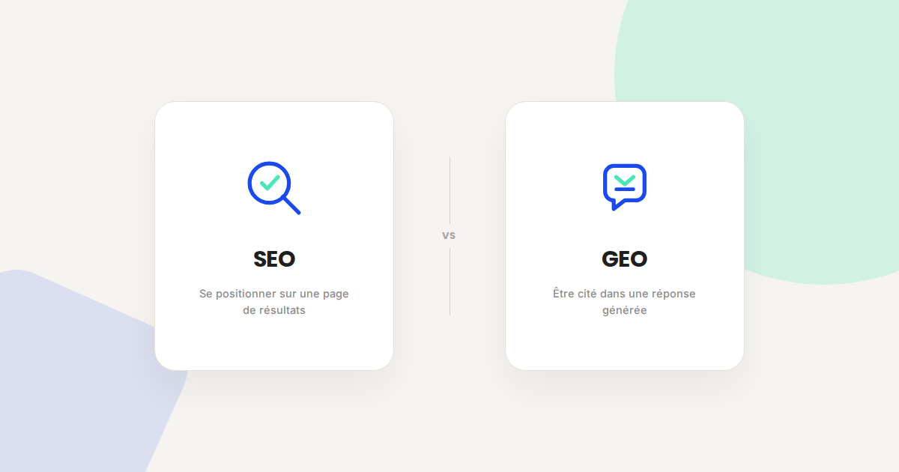
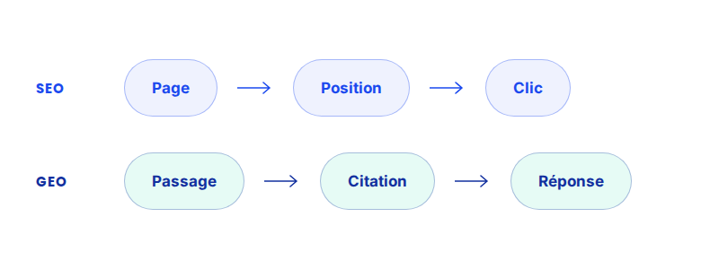

SEO vs GEO : ce qui change vraiment (et ce qui ne change pas)
Depuis quelques mois, tout le monde parle du GEO comme d'une discipline entièrement nouvelle. Une partie de ce qu'on en lit est du réchauffé habillé en tendance. Voici ce qui, dans mon expérience, change vraiment — et ce qui ne bouge pas d'un pouce.

Je passe une bonne partie de mes journées entre Google Ads, GA4 et des audits SEO. Depuis un moment, une question revient systématiquement en début de mission : « Et pour ChatGPT, on fait quoi ? ». La réponse courte : moins de choses différentes que ce qu'on vous vend, mais les bonnes différences comptent vraiment. Voici comment je fais le tri.
Ce qui ne change pas
Le contenu médiocre ne devient pas performant parce qu'on lui colle une étiquette GEO. Les fondamentaux qui faisaient un bon contenu SEO en 2020 sont toujours ceux qui font un contenu cité par une IA générative aujourd'hui : répondre précisément à une question réelle, être techniquement accessible (temps de chargement, structure HTML propre, pas de contenu caché derrière du JavaScript non indexable), et venir d'une source qui a une légitimité identifiable sur le sujet. Un audit technique reste un audit technique.
Le balisage structuré (Schema.org, format JSON-LD) sert aussi exactement les deux mondes, sans distinction : il aide Google à afficher un résultat enrichi, et il aide un modèle de langage à extraire une information fiable sans ambiguïté.
Ce qui change vraiment
- L'unité qui compte n'est plus la page, c'est le passage. En SEO classique, vous optimisez une URL pour qu'elle se positionne. En GEO, un modèle ne cite pas « une page » : il extrait un paragraphe précis, parfois une phrase, pour l'intégrer dans une réponse synthétisée. Une page peut être globalement moyenne et contenir malgré tout le passage exact qui sera repris — à condition qu'il soit formulé de façon suffisamment autonome et déclarative pour survivre hors contexte.
- Être cité ne veut pas dire être cliqué. Sur Google, une position 1 génère du trafic mesurable. Dans une réponse ChatGPT ou Perplexity, votre marque peut être citée sans qu'aucun clic ne soit généré. C'est une bascule importante pour piloter le ROI : le KPI n'est plus uniquement le trafic, mais aussi la visibilité de marque dans les réponses — plus difficile à mesurer, mais bien réelle.
- La fraîcheur et la précision battent l'autorité pure. Un modèle de langage n'a pas de mémoire parfaite de qui fait autorité sur un sujet depuis dix ans. Il a tendance à privilégier un contenu récent, daté, avec des chiffres précis et attribuables plutôt qu'un contenu ancien mais générique, même si ce dernier cumule plus de liens entrants.
- Ce n'est plus seulement votre site qui compte, mais où l'on parle de vous ailleurs. Les modèles s'entraînent et récupèrent de l'information sur un écosystème bien plus large que votre site : forums, presse spécialisée, comparateurs, avis. Être mentionné — pas nécessairement lié en backlink — sur ces sources devient un signal à part entière.

Un exemple qui illustre bien la différence
Dans les audits de visibilité IA que je fais pour mes clients, le cas le plus fréquent n'est pas « ma marque n'apparaît jamais » — c'est « ma marque apparaît, mais on cite mon concurrent numéro trois en position Google, jamais celui qui est premier ». Généralement parce que ce concurrent a une page qui répond littéralement, en une phrase claire, à la question posée — quand le numéro un noie la même réponse dans trois paragraphes d'introduction avant d'y arriver.
Ce que ça change concrètement pour votre contenu
- Écrivez la réponse avant l'argumentaire. Une phrase déclarative et complète qui répond à la question dès le premier paragraphe — le contexte et la nuance peuvent venir après.
- Structurez avec des titres qui sont des questions ou des affirmations claires, pas des titres créatifs qui ne veulent rien dire hors contexte.
- Datez et sourcez ce qui peut l'être. Un chiffre sans date ni source est le premier candidat à disparaître d'une synthèse générée.
- Balisez ce qui peut l'être (FAQPage, Article). Ça ne garantit rien, mais ça retire de l'ambiguïté pour la machine qui lit votre page.
FAQ
Faut-il arrêter le SEO classique pour se concentrer sur le GEO ?
Non. Le SEO reste la source de trafic la plus mesurable et la plus contrôlable. Le GEO s'ajoute, il ne remplace pas.
Comment savoir si ma marque est déjà citée par les IA génératives ?
Un audit de visibilité IA permet de le vérifier concrètement, question par question, plutôt que de le supposer.
Le GEO fonctionne-t-il sans un minimum de SEO technique ?
Non — un site mal crawlable ou mal structuré reste un obstacle, que ce soit pour Google ou pour un modèle de langage.
Envie d'y voir clair sur votre propre visibilité ?
Pour aller plus loin, voir la page SEO, la page GEO, et l'audit de visibilité IA.
Pour continuer sur ce sujet.